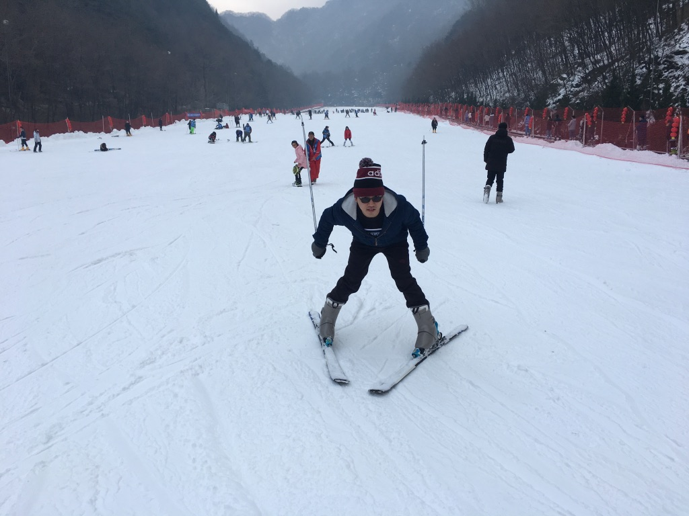
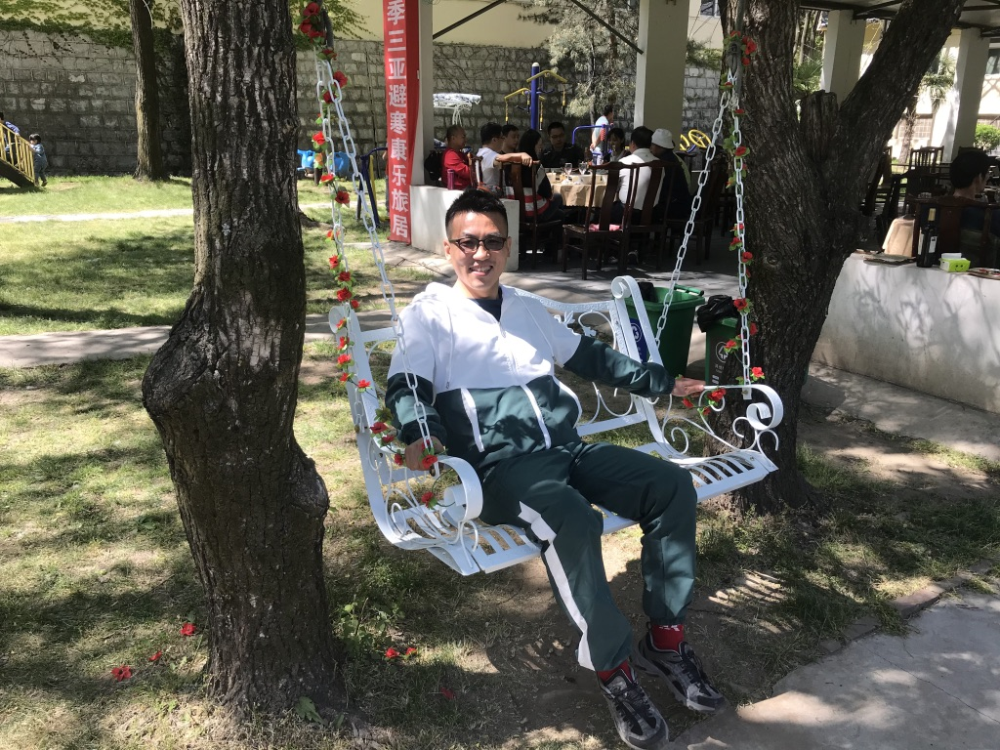
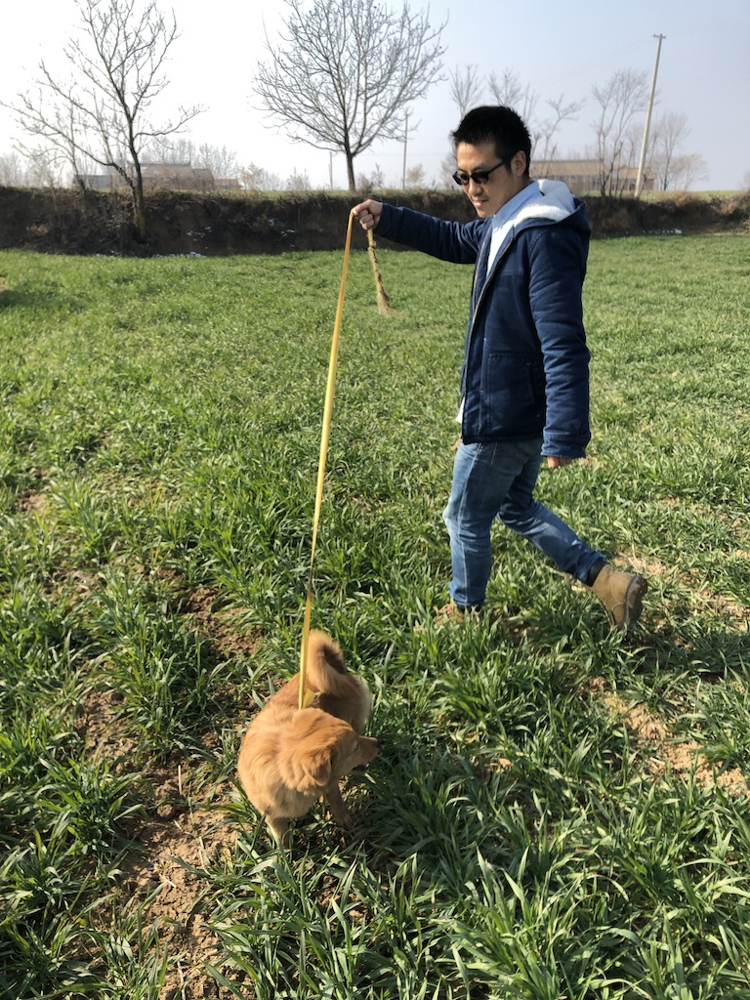

<div class="container-album">

	
	
	
	
	
	
	
	
	


</div>


<style>
	.container-album {

		width: 960px;

		height: 450px;

		margin: 60px auto;

		position: relative;

	}

	.pic {

		width: 160px;

	}

	.container-album img:hover {

		box-shadow: 15px 15px 20px rgba(50, 50, 50, 0.4);

		transform: rotate(0deg) scale(1.20);

		z-index: 2;

	}

	.container-album img {

		padding: 10px 10px 15px;

		background: white;

		border: 1px solid #ddd;

		box-shadow: 2px 2px 3px rgba(50, 50, 50, 0.4);

		-webkit-transition: all 0.5s ease-in;

		-moz-transition: all 0.5s ease-in;

		-ms-transition: all 0.5s ease-in;

		-o-transition: all 0.5s ease-in;

		transition: all 0.5s ease-in;

		position: absolute;

		z-index: 1;

	}

	.pic1 {

		left: 100px;

		top: 0;

		transform: rotate(-5deg);

		-webkit-transform: rotate(-5deg);

	}


	.pic2 {

		left: 300px;

		top: 0;

		transform: rotate(-20deg);

		-webkit-transform: rotate(-20deg);

	}

	.pic3 {

		left: 550px;

		top:0;

		transform: rotate(5deg);

		-webkit-transform: rotate(5deg);

	}

	.pic4 {

		left:100;

		top:150px;

		transform: rotate(-10deg);

		-webkit-transform: rotate(-10deg);

	}

	.pic5 {

		left:300px;
		
		top:150px;

		transform: rotate(-10deg);

		-webkit-transform: rotate(-10deg);

	}


	.pic6 {

		left: 440px;

		top: 150px;

		transform: rotate(10deg);

		-webkit-transform: rotate(10deg);

	}

	.pic7 {

		left: 100px;

		top: 300px;

		transform: rotate(20deg);

		-webkit-transform: rotate(20deg);

	}

	.pic8 {

		left:200px;
		
		top:300px;

		transform: rotate(5deg);

		-webkit-transform: rotate(5deg);

	}

	.pic9 {

		left: 550px;

		top: 300px;

		transform: rotate(15deg);

		-webkit-transform: rotate(15deg);

	}
</style>
